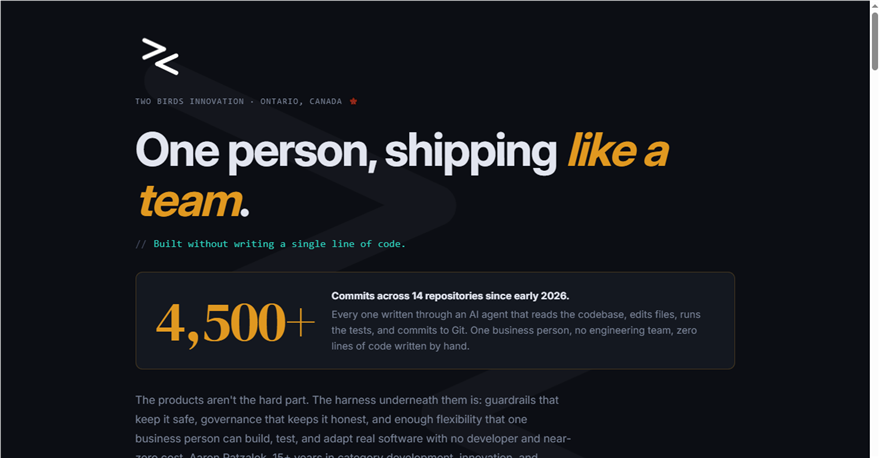
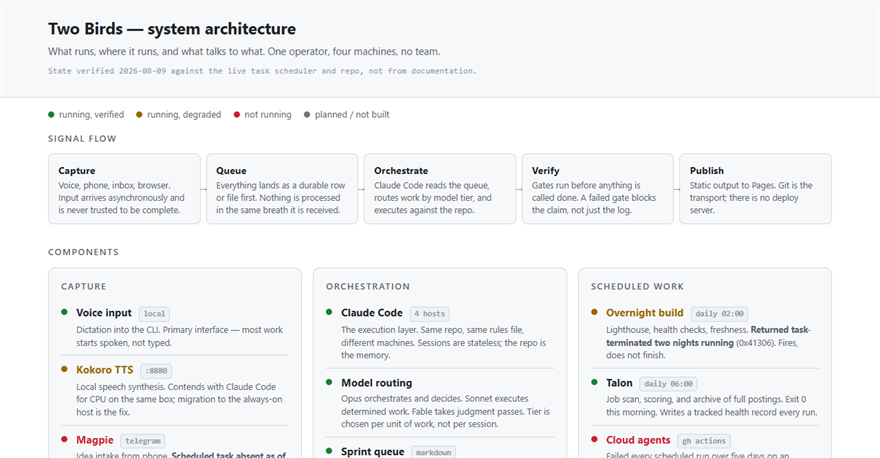

The HAL Stack · A working case study
An operator's AI stack that ships.
Designed and orchestrated by a non-programmer. Every line of code written by AI agents. (The name's a nod to 2001: A Space Odyssey. Make of that what you will.)
I'm not a developer. I'm an operator who spent 15 years turning "leadership wants this" into "the team shipped it." In early 2026 I pointed that skill at AI: instead of writing code, I designed the system, wrote the rules, and built the review gates. The system does the building. This page shows what that looks like when it's real.
How it works
I don't write the code. I run the shop.
The honest division of labour: I do the judgement work a machine shouldn't do, and the system does the execution work a person shouldn't have to. The interesting part isn't the AI. It's the management structure around it.
Design, rules, and sign-off
- Set direction. Which products exist, who they serve, what "good" means for each one.
- Write the rules. A living rulebook of about 30 governance rules: accessibility gates, privacy defaults, a ban on destructive actions without written approval, honesty requirements for reporting.
- Review and decide. Nothing user-facing goes out without my personal review. The system files decisions it can't make into a queue and waits.
- Learn from failures. Every rule in the rulebook is dated and traceable to the specific failure that caused it. The rulebook is a scar registry, and that's why it works.
Build, test, verify, report
- Execute sprints. AI agents read the task queue, write the code, commit it, and push it. Work is broken into sprints with completion gates.
- Verify its own output. A product change can't be reported "done" until an automated browser test passes against the live page. Reporting success without proof is treated as the same failure class as fabricating data.
- Run the night shift. Repository syncs, accessibility audits, smoke tests, uptime checks, and a morning briefing, unattended.
- Filter my inbox. An autonomy audit scans every open task nightly. Anything the system can do itself never reaches me.
The night shift
What runs while I sleep
Every night, on a schedule, with no one watching. This is the maintenance work that quietly kills most solo operations, made automatic.
-
repos
All 10 repositories synced and mirrored
Pulled, pushed, and backed up to an independent second host. If the primary host disappeared tomorrow, nothing is lost.
-
quality
Performance and accessibility audits
Lighthouse scores for every product, logged over time. Accessibility checks also run automatically on every code push.
-
smoke tests
Automated browser tests against every live product
A headless browser opens each site, checks key elements and flows, and saves a screenshot when something fails.
-
triage
Autonomy audit of the whole backlog
Every open task is checked: can the system do this without me? If yes, it's flagged for execution and never hits my queue.
-
dashboard
The command dashboard rebuilds itself
A private dashboard aggregates the job pipeline, backlog, deadlines, and recent builds from the source files, then redeploys. It cannot go stale because no one has to remember to update it.
-
briefing
Morning briefing written
A plain-English summary of what happened overnight and what genuinely needs a human, waiting when I open the laptop.
Proof, not promise
One evening, start to finish
On a summer evening in July 2026, I left the system running with a mandate and went out with my kids. This is the actual output from that run, taken from the report it wrote for me. Nothing here is hypothetical.
-
Three products rebuilt, each with its own visual identity
Digital Confidence Centre, Clarity, and Career Coach each got a full design rebuild: distinct typography and palette per product, verified for accessibility contrast in both light and dark modes, deployed as live previews for my review.
-
A two-way, self-maintaining dashboard shipped
A private command deck that reads the whole operation from source files, and writes back: marking an item done on the dashboard updates the underlying database. Confirmed with a real round-trip test before it was reported working.
-
The dashboard was wired to rebuild itself nightly
One addition to the overnight build means the dashboard can never drift out of date. Maintenance cost to me: zero.
-
It stopped itself at three products
The system could have kept rebuilding the rest of the portfolio. It chose not to, because my own diagnosis on file was "built but never reviewed by me," and six more unreviewed products would recreate that exact problem. It queued the rest and asked which one I wanted next.
-
It reported its gaps, not just its wins
The run report has a section titled "Honest gaps": what it deliberately didn't touch, what still needs my decision, and one piece of cleanup it owed. Every decision it needed from me was filed as a two-minute question, not buried in a transcript.
Why item four matters most: anyone can make an AI produce volume. The hard part, and the part I actually built, is a system with enough judgement encoded in it to stop, flag the risk, and wait for a human. That's not a demo trick. That's operations.
Go deeper
Two ways to look under the hood

Live — not a snapshot
The full stack
Every layer, every connected tool, every rule, laid out the way I actually think about it. Changes as the system changes.
Open the stack
Current & planned
High-level architecture
What runs, what it runs on, and what talks to what. Every component carries a status: running, degraded, dead, or planned. Checked against the live machine, not the documentation, which is why some of it reads red.
Open the mapThe rulebook
Rules written in scar tissue
A sample of the standing rules the system operates under. Each one exists because something specific went wrong once, and I decided it would never go wrong silently again. The full rulebook runs to about 30 of these.
No success without proof
No product change may be reported "done" until an automated test passes against the live page. Written after a bug was "fixed" three times while staying broken: the loop was verifying that commits were made, not that the page worked.
Never present a partial as complete
Any answer built on an incomplete read of the data must say so up front, unmissably. A silent partial is treated as the same severity as fabricating data. Written after a data source quietly truncated and three items were missed.
Nothing destructive without written approval
No deletion of databases, files, history, or deployments without explicit confirmation in the current session. No exceptions, including for the system's own convenience.
Don't hand a human machine-doable work
Before anything lands in my queue, a three-point check runs: can a script do it, can a connected tool do it, does it only need files? If any answer is yes, the system does it. A task once sat in my queue for 17 days that took the system 30 seconds.
Privacy by default
Any repository containing real personal data is private by default. Public is opt-in and requires explicit approval. Products collect nothing they don't need, which for most of them means nothing at all.
Own the exit
Before any external tool or service joins the stack, one question: if this vendor disappeared tomorrow, what breaks? Static hosting, standard-library scripts, and a mirrored second host mean the answer stays "nothing important."
The products
Six products. First client: ourselves.
Everything below was built on the system described above, by one person. Each product has a written strategy brief covering its market, its differentiation, and honestly, its open problems. The statuses below are real, including the unflattering ones.
Digital Confidence Centre
LiveFor libraries, municipalities, and older adults
A 29-module digital literacy platform, WCAG AA accessible, built to help fill the gap left when federal digital literacy funding was cut. Rebuilt with a warmer identity in the July 2026 run.
Clarity
LiveFor Ontario small business owners
A free AI readiness diagnostic: a short, honest assessment in, a personalised SWOT and action plan out. The v2 rebuild, with its own editorial identity, shipped as a preview in the July 2026 run.
Career Coach
LiveFor job seekers and career centres
An AI-assisted job search tool that pulls live Statistics Canada unemployment data monthly. The v2 rebuild introduced a verdict-driven flow that tells you plainly whether a posting is worth your time.
Digital Confidence Centre: Kids
BuildingFor families, school boards, and libraries
Digital literacy for children, built around family co-use rather than solo screen time. No logins, no data collection, Canadian escalation paths. The strategy brief is candid: the curriculum giants are free, so the wedge is the model, not more modules.
KevsCasa
In developmentFor housing navigators and the families they serve
A ranked apartment shortlist tool born from a real search for a real person. Its edge is verification: knowing which listings are genuine, current, and safe. Repositioning toward settlement workers who search on behalf of others.
NormeScore
Pre-buildFor regulated Canadian professionals
A technology-readiness diagnostic with sourced Canadian benchmarks, so an adviser can see where their own practice stands before advising clients on technology. Spec complete; deliberately held at the gate until one positioning decision is made.
And the shop window was built on the shop floor. This site, including the page you're reading, went through the same system as everything above: the same design tokens, the same accessibility checks in both themes, the same automated gates on every push. It isn't a product, it's the proof.
Keeping it honest
What this is not
- It's not a claim that I'm an engineer. I can't review a pull request line by line, and I don't pretend to. What I can do is design a system where the checks don't depend on me being one.
- It's not fully hands-off. The system runs unattended for hours, not weeks. It works because a human sets direction, reviews output, and makes the calls it queues up. That's by design, not a limitation I'm hiding.
- It's not finished. Several products above are previews or pre-build, and the run reports say so plainly. I'd rather show real statuses than a wall of green badges.
- It's not for sale as software. The HAL Stack is how I work, and the strongest evidence I can offer of what that work looks like. The thing on offer is the operator.
The point of all this
This is how I would work for you
This is what it looks like when I'm given an ambiguous problem and room to operate. Direction gets set, systems get built, output gets verified, and the reporting is honest about what's done and what isn't. If you run a business: I've already made the mistakes on my own products, on my own time. You get the version that ships.
Worth a conversation?
30 minutes. Bring a problem, ambiguity welcome. I'll tell you honestly whether I'm the right fit, and if I'm not, where to look instead.
Book a free conversationPrefer to connect first? Reach me on LinkedIn.